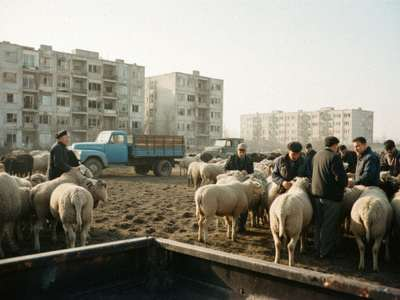

Market of 31 October 1999. Next update after next Sunday.
| Animal | Low | High | Usual | vs last week |
|---|---|---|---|---|
| Ram, fat-tail, 1.5-2 years | 300 | 480 | 380 | +20 (people buy for the winter meat) |
| Ewe, adult | 200 | 320 | 250 | = |
| Lamb, this year | 130 | 220 | 170 | -10 |
| Goat | 120 | 200 | 150 | = |
| Cow, Aulie-Ata, milking | 1,800 | 3,000 | 2,300 | +100 |
| Bull calf | 600 | 1,100 | 800 | -50 (the feedlot buyers didn't come) |
| Horse, working | 1,500 | 4,000 | 2,200 | = |
| Hay, bale | 6 | 9 | 7 | +1 |
All prices in som. 5 som = 1 dollar. "Usual" is what most animals went for, not the average, I don't have a calculator at the market. Good racing or ulak horses are not on this list, they are not sold at the market.

Jun 99 ###################### 330 Jul 99 ####################### 340 Aug 99 ######################## 350 Sep 99 ######################### 360 Oct 99 ########################## 380
I am Tologon, I keep sheep near Aulie-Ata and drive a truck. Every Sunday I am at the market anyway, so I write the prices in a notebook. My son types it here on Monday in the computer club in Kyzyl-Adyr. Farmers and traders in Talas ask us the prices, now they can look here. If you want prices from another market, write and maybe we can find somebody.
Mail: tologon_mal@attelkom.net

Old weeks: Sept 1999 | Aug 1999 | Jul 1999 (archive not working, sorry)